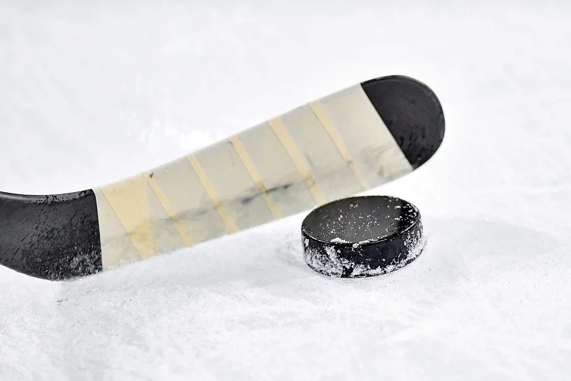

Hockey
I have been playing and watching hockey since I was four years old, and I have been in love with it ever since. I actually got my first pair of skates when I was just 3 years old. The game of hockey is like no other. In short, two teams with five players on the ice at a time try to control a rubber disc called a "puck" and get it passed the opposing teams goalie into the net. The NHL, short for National Hockey League, is the best mens professional hockey league in the world, and my favorite team is my hometown team, the Winnipeg Jets, so I will be sure to talk about them for a while. If you are a new fan to hockey, you will also want to check out the tournament that starts the day after Christmas. This tournament is called the World Juniors.
My Hockey Career
It all started when I was around 4 years old. My dad had played hockey his entire life, so basically as soon as I was able to walk I had skates on my feet. It was great. I played competitively until I as 18, and I still play in a mens league at my local rink once a week with the guys I grew up playing with. I have met many lifelong friends in my time playing hockey, and I heavily encourage anyone to try and play. Regardless of who you are there is a league or team out there ready to take you in. It is the most beautiful game in the world... In my eyes anyway.
Winnipeg Jets
The Winnipeg Jets are my hometown team. Unfortunately though, after poor fan appreciation and performance they moved to Arizona in 1997...The year I was born, so I thought I would never be able to see a game. But in 2011, my luck turned and the True North Group bought the Atlanta Thrashers, and thus Winnipeg Jets 2.0 was born. It has been a fun ride watching this team, and this year they may finally be a top championship contender. With a top-3 goalie in the league, and 4 olympic caliber players the jets are a force. This year, my Dad and I bought tickets to 7 games, so I will be lucky enough to see them live more than I ever have. They wear blue jerseys, and their logo is a CF-18 Hornet jet. I highly recommend watching a game if you find the time.
World Juniors
The World Junior tournament happens every year, in a different city around the world, and it starts on December 26th. 8 countries from around the world form a team of their best players under 20 years old and compete for a gold medal. Often times, these players go on to play in the NHL, so you get to watch the great future talent a bit early. As a Canadian kid, all you want is to play in the World Juniors for Team Canada. It is highly regarded as one of the greatest honors in canadian hockey. This tournament gives me some of my fondest memories with my Dad, of waking up as early as 3:00 AM to watch Canada play when the tournament is hosted in Europe.
To Wrap it up
In my eyes, hockey is the greatest game in the world, and its given me some of my best friends, and greatest memories I have. I cannot thank the game enough. It is truly a beautiful sport and I highly encourage anyone to watch a game or two and let me know what you think.